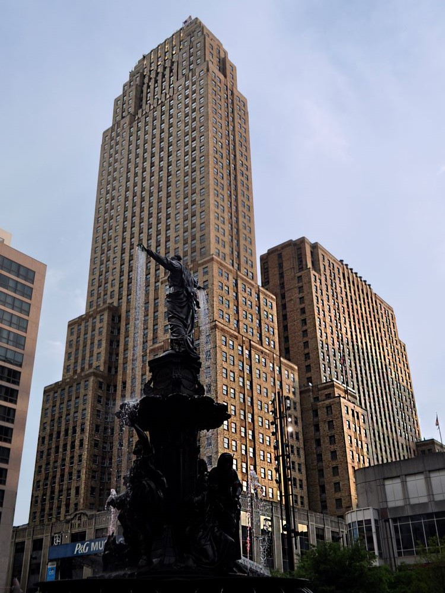

American Samoa National Park Travel Guide
remote protected landscape of volcanic islands featuring tropical rainforests, coral reefs, and traditional Polynesian villages shaped by centuries of cultural heritage.
Places to See in American Samoa National Park

Dough4872, CC BY-SA 4.0, via Wikimedia Commons; Image Size Adjusted

Cape Taputapu
Scenic coastal point with dramatic cliffs and ocean views
Dough4872, CC BY-SA 4.0, via Wikimedia Commons; Image Size Adjusted
Fagatele Marine Sanctuary
Marine sanctuary protecting coral reefs and tropical fish
Dough4872, CC BY-SA 4.0, via Wikimedia Commons; Image Size Adjusted
Jean P Haydon Museum
Historic museum displaying Samoan culture and artifacts
Dough4872, CC BY-SA 4.0, via Wikimedia Commons; Image Size Adjusted
Lata Mountain
Highest peak offering rainforest hikes and scenic views
Dough4872, CC BY-SA 4.0, via Wikimedia Commons; Image Size Adjusted
Leala Shoreline Trail
Coastal trail with ocean views and rocky shoreline scenery
Dough4872, CC BY-SA 4.0, via Wikimedia Commons; Image Size Adjusted
Mount Alava
Mountain ridge with panoramic island and ocean vistas
Dough4872, CC BY-SA 4.0, via Wikimedia Commons; Image Size Adjusted
Mount Alava Adventure Trail
Trail climbing to panoramic ridge views over Pago Pago harbor
Dough4872, CC BY-SA 4.0, via Wikimedia Commons; Image Size Adjusted
Ofu
Remote island with pristine reefs and one of the world's top beaches
Dough4872, CC BY-SA 4.0, via Wikimedia Commons; Image Size Adjusted
Ofu Beach
Pristine white sand beach with clear turquoise water
Dough4872, CC BY-SA 4.0, via Wikimedia Commons; Image Size Adjusted
Oge
Small village on Olosega with traditional Samoan character
Dough4872, CC BY-SA 4.0, via Wikimedia Commons; Image Size Adjusted
Oge Beach Trail
Trail leading to a secluded beach on Olosega island
Dough4872, CC BY-SA 4.0, via Wikimedia Commons; Image Size Adjusted
Olosega
Rugged volcanic island with lush cliffs and traditional Samoan villages
Dough4872, CC BY-SA 4.0, via Wikimedia Commons; Image Size Adjusted
Siu Point Trail
Coastal trail to the remote eastern tip of Tau island
Dough4872, CC BY-SA 4.0, via Wikimedia Commons; Image Size Adjusted
Tau
Remote island home to dense rainforest and ancient lava fields
Dough4872, CC BY-SA 4.0, via Wikimedia Commons; Image Size Adjusted
Tauese P.F. Sunia Ocean Center
Oceanfront visitor center with exhibits on marine science and conservation
Dough4872, CC BY-SA 4.0, via Wikimedia Commons; Image Size Adjusted
Tuafauna Trail
Challenging jungle hike with ladders leading to a coastal beach
Dough4872, CC BY-SA 4.0, via Wikimedia Commons; Image Size Adjusted
Turtle and Shark
Iconic rock formation with deep cultural legend significance
Dough4872, CC BY-SA 4.0, via Wikimedia Commons; Image Size Adjusted
Tutuila
Main island known for lush mountains and coastal scenery
Dough4872, CC BY-SA 4.0, via Wikimedia Commons; Image Size Adjusted
Vatia
Quiet coastal village surrounded by rainforest landscapes
Visitor Center: Monday to Friday 8:00am to 3:00pm
Closed weekends and federal holidays
No entrance pass required
Overview
The National Park of American Samoa spreads across three volcanic islands in the South Pacific, Tutuila, Ofu, and Taʻū, and is the only U.S. national park south of the equator. It protects about 13,500 acres of land and nearby ocean, including paleotropical rainforest, steep sea cliffs, pristine beaches, and coral reefs, and it is one of the most remote national parks in the country. The rainforest, one of the least disturbed in the U.S. system, is home to two species of flying foxes, the large fruit bats that are among the park's most unusual residents, and the reefs hold hundreds of species of coral and fish.
The park was authorized in 1988. Unlike most national parks, its land is not owned by the federal government but is leased from Samoan villages, which continue to live on and use it, so the park protects the traditional way of life, fa'a Samoa, alongside the environment. People visit for the rainforest hikes with ocean views, the snorkeling at Ofu Beach, the chance to see flying foxes and sea turtles, and the chance to experience Samoan culture. It is a destination for travelers who want an uncrowded, adventurous park.
Park Sections
The park has three units on three islands. The Tutuila unit, on the main island, has the most visitors and includes the rainforest and cliffs around Mount ʻAlava, the village of Vatia, and the Tutuila coast and Pola Island; the park visitor center is in Pago Pago. The Ofu unit, connected by a bridge to Olosega, has the finest beach and reef in the park, Ofu Beach. The Taʻū unit includes Lata Mountain, the highest point in American Samoa, and dramatic sea cliffs. The islands are reached by plane or boat.
Sightseeing and Exploring the Park
The park has no scenic drive in the usual sense, but Tutuila's roads offer views. The road to Vatia leads to a village and a viewpoint over the island of Pola, and the north coast road passes sea cliffs and villages. Other sights on Tutuila include Cape Taputapu, the Turtle and Shark cultural site in Vaitogi, and the Fagatele Bay National Marine Sanctuary. In Pago Pago, the Jean P. Haydon Museum covers Samoan culture. On Ofu and Taʻū, the main sights are the beach and the trails. Always ask permission in villages.
Hiking
Hiking is a main activity on Tutuila. The Mount ʻAlava Adventure Trail, about 7 miles round trip, follows a ridge through rainforest to a summit with views of the island and ocean, and it is the park's best-known hike. The Tuafanua Trail and the Leala Shoreline Trail are shorter coastal walks, and the ʻOge Beach Trail leads to a remote beach. On Taʻū, the Siu Point Trail follows the coast. The trails can be hot, humid, and muddy, with steep sections. Bring plenty of water, insect repellent, and sun protection.
Other Activities
Ofu Beach is considered one of the best snorkeling spots in the United States, with clear water, healthy corals, and abundant fish just off the sand. Visitors can also swim, kayak, dive, and watch for sea turtles and, from September to November, humpback whales. Cultural activities include visiting villages and, with the park's help, staying in village homestays on Ofu and Taʻū, learning about Samoan traditions such as weaving and food preparation, and attending a Sunday church service, if invited. There are no cave tours or large outfitters, and most tours are arranged locally.
Flora and Wildlife
The park protects rainforest with breadfruit, banyan, and tree ferns, as well as coastal strand, cloud forest on the highest peaks, and coral reefs. The most distinctive wildlife is the flying fox, or fruit bat, which can often be seen flying in daylight over the forest. The reefs support about 950 species of fish and 250 species of coral, and green and hawksbill sea turtles feed there. Seabirds such as boobies, terns, and tropicbirds nest on the cliffs. Viewing is on your own, and rangers can suggest good locations. Visitors should not touch or remove coral or animals.
Access
The park is far from the mainland. Flights from Honolulu land at Pago Pago International Airport on Tutuila, usually several times a week, taking about 5.5 hours, and Samoa Airways connects Pago Pago with Apia in independent Samoa. Inter-island flights from Pago Pago reach Ofu and Taʻū in small planes, and boat service is limited. On Tutuila, public transportation is by colorful local buses, called aiga buses, and taxis, and many visitors rent a car. U.S. citizens do not need a passport to enter from the United States, but international travelers do. Flights are limited, so plan well in advance.
Seasons
The climate is tropical year-round, with temperatures in the 80s °F and high humidity. The drier season runs from about May to October and is the best time to visit, with less rain and clearer skies, and humpback whales visit in September and October. The wet season, from about November to April, brings heavy rain, mud on trails, and cyclone risk. Hurricane and cyclone season runs from November to April. Some trails close after storms. Check with the park for current conditions.
Camping and Lodging
There are no campgrounds in the park, and camping is not generally allowed. Lodging is outside the park. On Tutuila, hotels are around Pago Pago and the airport, such as Sadie's by the Sea, Tisa's Barefoot Bar, and the Tradewinds Hotel, and village homestays are available in some places. On Ofu, the Va-i-Moana Seaside Lodge and homestays are near Ofu Beach, and Taʻū has homestays arranged through local contacts. Book in advance, since rooms are limited.
Visitor Centers
The park's main visitor center is the Tauese P.F. Sunia Ocean Center in Pago Pago on Tutuila, which has exhibits on the park's natural and cultural resources, a film, and rangers who can advise on trails and village protocols. Small visitor facilities on Ofu and Taʻū provide information, and the park staff are available to answer questions. Hours vary and can change, so check with the National Park Service before you go.
This article uses material from the Wikipedia article for National Park of American Samoa and information from the official National Park Service, American Samoa Government, and American Samoa tourism resources. Wikipedia content is available under the Creative Commons Attribution-Share-Alike License 3.0. Additional information comes from the National Park Service National Park of American Samoa website.

.jpg){kind=link}